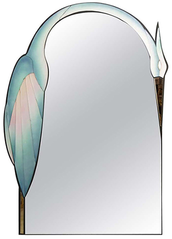

Couleur : vert
Forme : ovale
Style : ce miroir moderne et coloré est créé et signé par l’artiste américain David Marshall. Conçu dans les années 1990, il est fait entièrement de verre sculpté. Un héron vert d’eau orne son pourtour.
Époque : XXᵉ siècle
Hauteur : 99 cm
Largeur : 71 cm
Date d’acquisition : 2020-02-17
Moyen d’acquisition : achat
Prix d’achat : 3500 €